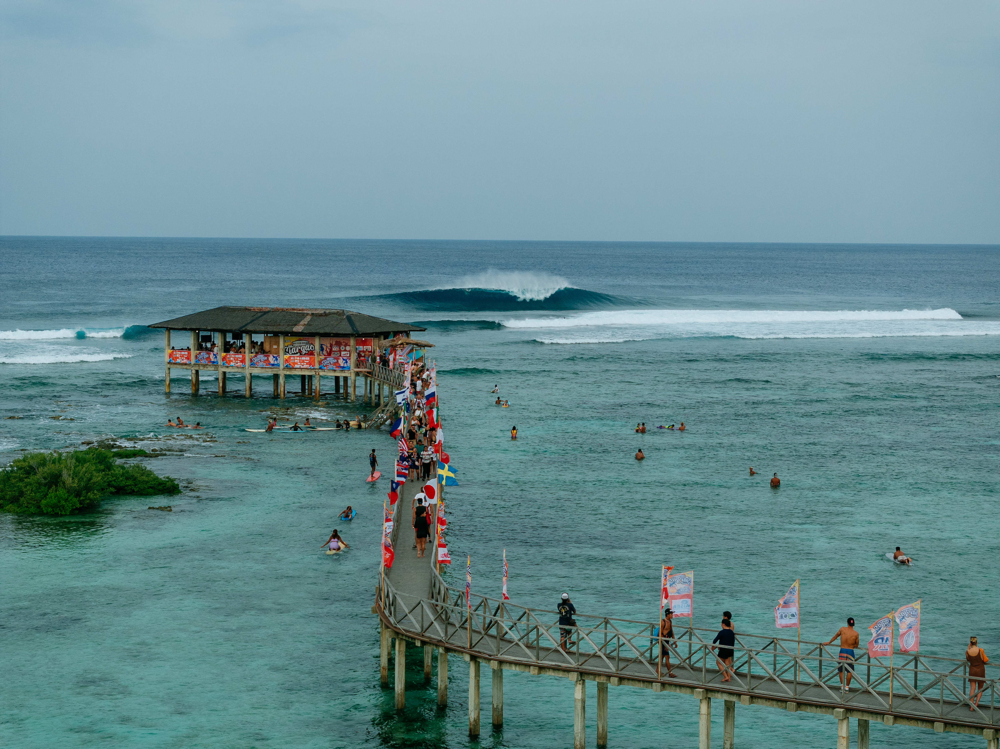

A WSL Filipinas representa uma das principais novidades do calendário do Circuito Mundial de Surfe. Pela primeira vez, Cloud 9 recebe uma etapa do CT. O evento, oficialmente chamado de Philippines Pro presented by the Philippine Sports Commission, tem janela de competição entre 31 de outubro e 10 de novembro de 2026.
A estreia acontece em um momento decisivo da temporada. O campeonato corresponde à 11ª das 12 etapas do calendário e é a segunda parada da pós-temporada, período que reúne um número reduzido de atletas na disputa por pontos importantes para o ranking mundial. Depois das Filipinas, o circuito segue para o Pipe Masters, no Havaí, responsável por encerrar a temporada e definir os campeões mundiais de 2026.
Além da importância esportiva, a chegada do Championship Tour a Siargao valoriza uma região com tradição em competições internacionais. Cloud 9 já recebia eventos profissionais havia décadas, mas a inclusão no CT representa uma mudança de patamar para a onda e para o surfe das Filipinas.
O lugar é reconhecido internacionalmente pela qualidade de suas ondas, principalmente pelas direitas tubulares que quebram sobre uma bancada de recife.
A formação das ondas favorece tubos profundos, mas também apresenta seções que permitem curvas fortes e manobras aéreas. Essa variedade torna o pico particularmente interessante para confrontos entre surfistas de estilos diferentes.
Uma das características mais marcantes da onda é a velocidade com que ela pode se desenvolver sobre o recife. O posicionamento na entrada, a leitura da parede e a capacidade de completar o tubo são elementos fundamentais para alcançar boas notas.
A etapa também amplia a diversidade de condições encontradas pelos atletas durante a temporada. Enquanto algumas competições privilegiam curvas e manobras progressivas em ondas mais abertas, o local oferece um cenário no qual o desempenho dentro do tubo pode ter grande influência no resultado das baterias.
A história de Cloud 9 no surfe profissional
O pico recebe competições internacionais desde 1996 e passou a integrar regularmente o Qualifying Series da WSL em 2014. Durante esse período, Siargao ganhou reconhecimento entre atletas que buscavam pontos para avançar na estrutura competitiva do surfe profissional.
O Siargao International Surfing Cup ajudou a construir essa trajetória. Ao reunir competidores estrangeiros e talentos filipinos, o campeonato colocou a ilha no calendário internacional e deu visibilidade a surfistas acostumados às condições locais.
Em 2026, a competição de Cloud 9 estava inicialmente prevista para integrar o novo nível internacional QS 6000, mas acabou promovida ao Championship Tour.
A mudança foi anunciada oficialmente pela WSL em julho de 2026, com a confirmação de que o Philippines Pro também faria parte do calendário da elite em 2027.
A inclusão esteve diretamente relacionada à reorganização do calendário mundial.
Inicialmente, a WSL anunciou a etapa de Cloud 9 como uma alternativa para garantir a realização de pelo menos 12 competições na temporada, diante das incertezas envolvendo o Surf Abu Dhabi Pro, nos Emirados Árabes Unidos.
Posteriormente, em setembro de 2026, a liga retirou oficialmente Abu Dhabi do calendário por dificuldades logísticas associadas à situação internacional na região.
Com isso, o Championship Tour passou a contar com 12 etapas, preservando o número originalmente planejado para a temporada.
Cloud 9 assumiu a posição de 11ª parada do circuito, depois do evento de Peniche, em Portugal, e antes da decisão em Pipeline, no Havaí.
A mudança também deu às Filipinas uma oportunidade inédita de receber os principais atletas do ranking masculino e feminino da WSL.
Como funciona o formato da competição
O Philippines Pro integra a pós-temporada do Championship Tour, uma fase que apresenta diferenças importantes em relação às primeiras nove etapas do calendário.
Depois do corte realizado ao término da temporada regular, apenas os surfistas classificados seguiram para os eventos de Portugal e das Filipinas, além das vagas destinadas a convidados.
O evento conta com 40 atletas no total, divididos entre as categorias masculina e feminina.
- Categoria masculina: 24 surfistas, sendo 22 classificados pelo circuito e dois convidados.
- Categoria feminina: 16 surfistas, sendo 14 classificadas e duas convidadas.
No masculino, os oito principais cabeças de chave entram diretamente na segunda rodada. Os demais disputam a primeira fase em confrontos eliminatórios.
No feminino, todas as 16 participantes começam na primeira rodada. As vencedoras avançam às quartas de final, seguindo posteriormente para semifinais e decisão.
O formato de 2026 também eliminou as antigas rodadas de repescagem. Assim, cada derrota representa a eliminação do atleta naquela etapa, aumentando a importância de todas as baterias.
Brasileiros na WSL Filipinas
A Brazilian Storm chega ao Philippines Pro com uma participação expressiva, tendo 4 surfistas entre os cinco primeiros colocados no ranking mundial.
Os brasileiros inscritos são:
- 1. Yago Dora
- 2. Italo Ferreira
- 3. Gabriel Medina
- 4. Filipe Toledo
- 5. Miguel Pupo
- 6. Samuel Pupo
- 7. João Chianca
- 8. Luana Silva
Yago Dora chega à etapa como líder do ranking masculino, enquanto Italo Ferreira ocupa a segunda posição após a disputa de Portugal.
A posição dos dois brasileiros oferece uma vantagem competitiva importante: ambos começam diretamente na segunda rodada.
Gabriel Medina e Miguel Pupo também iniciam a competição nessa fase, enquanto Filipe Toledo, Samuel Pupo e João Chianca aparecem entre os brasileiros que precisam disputar o primeiro confronto.
Na chave feminina, Luana Silva é a representante brasileira. A surfista enfrenta Bettylou Sakura Johnson, do Havaí, na primeira rodada.
As primeiras baterias confirmadas
O chaveamento anunciado pela WSL antes da abertura do Philippines Pro apresentou confrontos interessantes para os representantes brasileiros.
Baterias na primeira rodada:
- Filipe Toledo x Cole Houshmand (Estados Unidos)
- João Chianca x Liam O'Brien (Austrália)
- Samuel Pupo x John Mark Tokong (Filipinas)
A distribuição das baterias também abriu a possibilidade de um confronto brasileiro na segunda rodada.
Gabriel Medina ficou no chaveamento para enfrentar o vencedor do duelo entre João Chianca e Liam O'Brien. Dessa maneira, caso Chumbinho avançasse, os dois brasileiros se encontrariam logo na estreia de Medina.
Yago Dora, por sua vez, ficou no caminho do vencedor de Connor O'Leary, do Japão, contra Callum Robson, da Austrália.
Italo Ferreira caiu para enfrentar quem avançar entre Marco Mignot, da França, e Seth Moniz, do Havaí.
Previsão das ondas para os primeiros dias de janela
A previsão aponta ondas em crescimento nos dois primeiros dias da janela do Philippines Pro 2026.
Sábado, 31 de outubro — abertura da janela
- Altura das ondas: 3 a 4 pés (0,9 a 1,2 metro).
- Direção do swell: leste-nordeste (ENE).
- Período: aproximadamente 15 segundos.
- Vento: fraco, com possibilidade de mar liso durante parte da manhã e do início da tarde.
- Melhores condições previstas: manhã e começo da tarde.
Domingo, 1º de novembro — segundo dia da janela
- Altura das ondas: aproximadamente 7 pés (2,1 metros).
- Direção do swell: nordeste (NE).
- Período: aproximadamente 12 segundos.
- Vento: fraco durante parte da manhã, com possibilidade de vento maral à tarde.
- Melhores condições previstas: primeiras horas da manhã, com aumento do tamanho das ondas ao longo do dia.
O cenário indica uma abertura de janela com ondas de bom potencial e possibilidade de condições maiores no domingo. Entretanto, os modelos ainda apresentam diferenças importantes nas estimativas de altura e período.
Também existe um ponto de atenção: exsite uma possibilidade de tempestades nos dois dias, o que exige acompanhamento das atualizações meteorológicas.
Os modelos apontam um swell em crescimento entre 31 de outubro e 1º de novembro, com potencial para ondas maiores no segundo dia. Ainda não é possível garantir que a WSL realizará baterias nessas datas, pois a decisão dependerá das condições efetivas do mar e da avaliação da organização.
Onde assistir à WSL Filipinas: Horários e transmissão no Brasil
O Philippines Pro tem transmissão anunciada para o público brasileiro pelo canal oficial da WSL no YouTube.
A primeira chamada está prevista para sábado, 31 de outubro, às 7h da manhã no horário local de Siargao. Entretanto, devido à diferença de fuso horário, os brasileiros deverão ficar atentos: o horário corresponde às 20h de sexta-feira, 30 de outubro, em Brasília.
Isso significa que o país asiático está 11 horas à frente do Brasil, fazendo com que as sessões realizadas pela manhã em Cloud 9 sejam acompanhadas durante a noite do dia anterior pelo público brasileiro.
É importante destacar que a primeira chamada não representa necessariamente o início imediato das baterias. A organização avalia diariamente as condições do mar, incluindo tamanho das ondas, direção do swell, vento e segurança dos atletas, antes de autorizar a competição.
Como está a disputa pelos títulos mundiais
A WSL Filipinas 2026 chega em um momento decisivo da corrida pelos títulos mundiais masculino e feminino. Com apenas duas etapas restantes no calendário, os resultados de Cloud 9 podem alterar diretamente a classificação e definir quais surfistas chegarão em melhores condições ao Pipe Masters, no Havaí.
No masculino, o Brasil ocupa uma posição de destaque. Yago Dora lidera o ranking mundial, seguido por Italo Ferreira, enquanto Gabriel Medina e Miguel Pupo também aparecem entre os cinco primeiros colocados. Dos cinco principais atletas da classificação, quatro são brasileiros, reforçando a força do país na disputa pelo título de 2026.
Classificação masculina após a etapa de Portugal:
- 1. Yago Dora — 48.865 pontos
- 2. Italo Ferreira — 46.015 pontos
- 3. Griffin Colapinto (Estados Unidos) — 43.695 pontos
- 4. Gabriel Medina — 43.210 pontos
- 5. Miguel Pupo — 42.770 pontos
Yago, atual campeão mundial, chega às Filipinas defendendo a liderança conquistada ao longo da temporada. O brasileiro venceu a etapa de Saquarema e manteve regularidade suficiente para permanecer na primeira colocação mesmo diante da aproximação dos adversários.
Italo Ferreira também vive uma temporada consistente. Campeão da etapa da Nova Zelândia e vice-campeão em El Salvador, o potiguar aparece imediatamente atrás de Yago e tem a oportunidade de assumir a liderança em Cloud 9.
Gabriel Medina ganhou força na disputa depois do vice-campeonato em Peniche. O tricampeão mundial perdeu a final portuguesa para Griffin Colapinto, mas subiu para a quarta posição do ranking e reduziu a distância para os primeiros colocados.
Miguel Pupo completa o grupo brasileiro no top 5. Vencedor das etapas de Bells Beach e Trestles, o surfista também permanece matematicamente na corrida pelo título.
Considerando a classificação após Portugal e o sistema de pontuação de 2026, a disputa permanece matematicamente aberta nas duas categorias para a etapa decisiva em Pipeline.
O motivo está no regulamento adotado pela World Surf League. O campeonato mundial voltou a ser decidido pelo ranking acumulado, considerando os nove melhores resultados de cada atleta entre as 12 etapas.
Enquanto o vencedor do Philippines Pro recebe 10 mil pontos, o campeão do Pipe Masters conquista 15 mil, uma bonificação de 50% em relação às etapas convencionais.
Essa diferença mantém a possibilidade de mudanças importantes na classificação durante a última competição, mesmo para atletas que cheguem ao Havaí atrás dos líderes.
Assim, Cloud 9 não será palco da coroação antecipada dos campeões mundiais de 2026. A etapa terá a função de definir vantagens, reduzir diferenças e estabelecer o cenário da decisão em Pipeline.
Disputa feminina também está aberta
Entre as mulheres, a australiana Molly Picklum chega às Filipinas na liderança depois de conquistar a etapa de Portugal. Atual campeã mundial, ela derrotou Caitlin Simmers na final de Peniche e assumiu a primeira colocação.
Carissa Moore, Gabriela Bryan e Erin Brooks também aparecem entre as principais concorrentes. A proximidade na classificação mantém a disputa aberta para a reta final da temporada.
A brasileira Luana Silva ocupa a sétima posição do ranking e segue matematicamente na corrida pelo título. A surfista chegou a duas finais durante a temporada, em Margaret River e Gold Coast, resultados importantes para sua permanência entre as principais competidoras do circuito.
Embora esteja atrás das líderes, Luana ainda pode melhorar sua situação com bons resultados nas Filipinas e no Havaí.
Cloud 9 será, portanto, o último grande teste antes do Pipe Masters. A etapa não entregará as taças mundiais, mas seus resultados terão influência direta sobre a corrida pelos títulos masculino e feminino da WSL 2026.
O legado da WSL Filipinas 2026 para o surfe mundial
A entrada de Cloud 9 no Championship Tour representa mais do que a inclusão de uma nova etapa no calendário.
O Philippines Pro conecta a tradição competitiva de Siargao à principal divisão do surfe profissional, amplia a presença da WSL na Ásia e oferece aos melhores atletas do planeta uma onda reconhecida pela qualidade de seus tubos.
Para os brasileiros, a etapa representa mais uma oportunidade de conquistar pontos decisivos em uma temporada que termina no Havaí. Para os filipinos, significa a possibilidade de disputar uma competição de elite em casa, diante de nomes consagrados do esporte.
A confirmação de Cloud 9 também para o calendário de 2027 reforça a intenção de estabelecer uma presença duradoura da elite mundial nas Filipinas.
Em uma temporada marcada por mudanças de formato, eliminação das repescagens e retorno da decisão por ranking acumulado, o Philippines Pro ocupa um lugar especial.
Cloud 9 já possuía história, prestígio e reconhecimento entre surfistas profissionais. Em 2026, ganhou também um espaço no palco principal do esporte, transformando Siargao em um ponto importante da corrida pelos títulos mundiais da WSL.